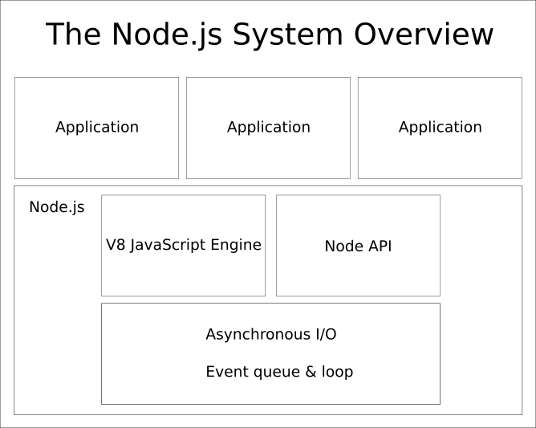

<!doctype html>
<html class="theme-5">
<meta charset="utf-8" />
<link href="../html-slideshow.bundle.min.css" rel="stylesheet" />
<link href="../style.css" rel="stylesheet" />
<script src="https://dbwebb.se/cdn/js/html-slideshow_v1.1.0.bundle.min.js"></script>

<title>JavaScript Node</title>

<script data-role="slide" type="text/html" data-markdown class="titlepage center">
# JavaScript
## Node.js and npm
### Mikael Roos
</script>


<script data-role="slide" type="text/html" data-markdown>
# Agenda

* About Node, npm and how to code JavaScript with node
* History
* Hello world
* Modules
* API and builtins
* External packages

</script>


<script data-role="slide" type="text/html" data-markdown>
# History Node.js

* Node.js created by Ryan Dahl in 2009 (Linux/MacOS)
* Node.js combined 
    * Google's V8 JavaScript engine
    * Event loop
    * Low-level I/O API
* Windows version released in 2011
* Managed by the OpenJS Foundation

</script>


<script data-role="slide" data-markdown type="text/html" class="center">
# Node system view
<figure>
    
    <figcaption>Overview of the Node.js system.</figcaption>
</figure>
</script>


<script data-role="slide" type="text/html" data-markdown>
# Node.js releases

* 14, 16, 18 is Long Term Support (LTS)
* 15, 17, 19 is development versions with latest updates
* Each version is using a specific version of the V8 engine

</script>


<script data-role="slide" type="text/html" data-markdown>
# npm packet manager

* Node Packet Manager
* Introduced in 2010 by Isaac Schlueter
* To publish and share source code
* Simplify installation, updating, and uninstallation of packages

```
npm install <package>
```

</script>


<script data-role="slide" type="text/html" data-markdown class="titlepage center">
# Hello world
</script>


<script data-role="slide" data-markdown type="text/html">
# Hello world

* Create a file `index.mjs` (or `index.js`)
* Run it using `node index.mjs`

```
/**
 * A sample of a main stating the famous Hello World.
 */
console.log('Hello World')

for (let i = 0; i < 9; i++) {
    console.log(i)
}

const a = 1
const b = a + 1
console.log(a, b)
```
</script>


<script data-role="slide" type="text/html" data-markdown>
# Interactive console

* Start `node` in the terminal and get an interactive console
* Quickly try small constructs

```
$ node
Welcome to Node.js v18.12.1.
Type ".help" for more information.
> console.log("Hello world")
Hello world
```

</script>


<script data-role="slide" type="text/html" data-markdown class="titlepage center">
# Node with modules
## CJS or MJS (ESM)
</script>


<script data-role="slide" type="text/html" data-markdown>
# Node require

* CommonJS style, aka CJS
* Node has its own module management using `require`
* Use to access the built in library, the Node API
* Use to structure code into files, modules and classes
* (existed before ECMAScript modules were standardized and implemented)

</script>


<script data-role="slide" type="text/html" data-markdown>
# Node module.exports

* Create a file `Module.js` and state what it exports
* The parts not exported are private to the module code

```
module.exports = {
    doubleIt: (value) => value * 2,
    squareIt: (value) => value * value
}
```

</script>


<script data-role="slide" type="text/html" data-markdown>
# Node require

* Import the module into main `index.js` using `require`

```
const MathModule = require('./Module.js')

let a = 1
let b = 2

a = MathModule.doubleIt(a)
b = MathModule.squareIt(b)
```

</script>


<script data-role="slide" type="text/html" data-markdown>
# ESM .mjs

* Use the newer standardized ESModules
* Name files using ECMA Script modules to `.mjs`
* Same type of modules and classes as for JavaScript on the client side

</script>


<script data-role="slide" type="text/html" data-markdown>
# Write a ESM class

* This is how a class can look like in `Dice.mjs`

```
export default class Dice {
  #dice = null

  roll (faces = 6) {
    this.#dice = Math.floor(Math.random() * faces + 1)
    return this.#dice
  }

  toString () {
    return this.#dice
  }
}
```

</script>


<script data-role="slide" type="text/html" data-markdown>
# Import and use class

* Import the class into `index.mjs`

```
import Dice from './Dice.mjs'

const die = new Dice()

console.log(die)
```

</script>


<script data-role="slide" type="text/html" data-markdown>
# Write a ESM module

* Write a module `MathModule.mjs` that exports functions/variables
* The parts not exported are private to the module code

```
export default {
    doubleIt: (value) => value * 2,
    squareIt: (value) => value * value
}
```

</script>


<script data-role="slide" type="text/html" data-markdown>
# Import and use module

* Use the module in main `index.mjs`

```
import MathModule from './MathModule.mjs'

let a = 1
let b = 2

a = MathModule.doubleIt(a)
b = MathModule.squareIt(b)
```

</script>


<script data-role="slide" type="text/html" data-markdown>
# What modules to use?

* Both are valid
    * ESM is standardized and newest
* Small differences 
    * `import` versus `require`
    * `export` versus `module.export`
    * `mjs` versus `js`
* Can be configured in `package.json` as `"type": "module"`

</script>


<script data-role="slide" type="text/html" data-markdown class="titlepage center">
# Node API
</script>


<script data-role="slide" type="text/html" data-markdown>
# Built in functions

* A standard library with utilities
* Work with the environment
    * Input/Output
    * System, memory, filesystem, processes

<p class="footnote">https://nodejs.org/api/</p>

</script>


<script data-role="slide" type="text/html" data-markdown>
# API CJS/MJS

* Common JS versus MJS/ESM
* Use require or import for the API?
    * Use the same as for your own modules
* The documentation supports both

```
import * as readline from 'node:readline/promises';
```

```
const readline = require('node:readline/promises');
```

</script>


<!--
<script data-role="slide" type="text/html" data-markdown>
# Input/Output

```
import * as readline from 'node:readline/promises';
import { exit, stdin as input, stdout as output } from 'node:process';
const rl = readline.createInterface({ input, output });

// Input
const name = await rl.question('What is your name? ');
console.log(name)

// Output
const msg = 'Hello world'
console.log(msg + ' ' + name)

// Exit
exit()
```

</script>
-->


<script data-role="slide" type="text/html" data-markdown class="titlepage center">
# Node async/await
</script>


<script data-role="slide" type="text/html" data-markdown>
# Sync, promise, callback

* Node API implementations for 
    * synchronous (partly)
    * callbacks
    * promises
* async/await uses promises
* Different programming styles, more or less same results

</script>


<script data-role="slide" type="text/html" data-markdown>
# Await

* In general, the `await` is an easy to use approach
* (No need to have a main function with async on the highest level when using MJS)

```
name = await rl.question('What is your name? ');
```
</script>


<script data-role="slide" type="text/html" data-markdown class="titlepage center">
# JavaScript builtin objects
</script>


<script data-role="slide" type="text/html" data-markdown>
# JavaScript builtins

* Work with builtin JavaScript objects
* Same as in the browser 
    * (excluding the window and document objects)

```
let dice = Math.round(Math.random() * 6 + 1)
console.log(`The dice is ${dice}`)
```

```
let object = {
    key1: 'Value 1',
    key2: 42
}
console.log(JSON.stringify(object, null, 2))
```

</script>


<script data-role="slide" type="text/html" data-markdown class="titlepage center">
# NPM modules
</script>


<script data-role="slide" type="text/html" data-markdown>
# Add npm module

* Use npm to add modules and include in your own code
* The registry https://www.npmjs.com/
* (Build your own npm modules and share with others)

</script>


<script data-role="slide" type="text/html" data-markdown>
# Use npm module

* Download and install

```
npm install console-table-printer
```

* Import it

```
import { printTable, Table } from 'console-table-printer'
```

</script>


<script data-role="slide" type="text/html" data-markdown>
# Summary

* Node.js
    * V8
    * API
    * Event loop
* npm
* Modules CJS/MJS
* Packages from npm registry
* JavaScript builtins

</script>


<script data-role="slide" type="text/html" data-markdown class="titlepage center">
# The end
</script>


<script data-role="slide" type="text/html" data-markdown>
</script>

</html>
